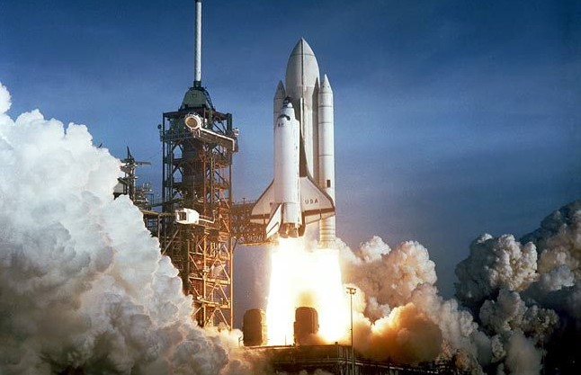

Shuttle je prva orbitalna svemirska letjelica projektirana za djelomično
višestruko korištenje. Prevozi korisni teret u nižu orbitu, omogućuje
rotaciju posade na Međunarodnoj svemirskoj postaji (ISS)[12], i obavlja
popravke satelita, svemirskih postaja i sličnih orbitalnih uređaja. Orbiter
također može ukrcati satelite i druge terete iz orbite i vratiti ih na zemlju.
Svaki pojedini Shuttle bio je dizajniran za planirani radni vijek od 100 letova
kroz 10 godina korištenja.[13] Glavni odgovorni dizajner STS-a bio je Maxime
Faget[14], koji je također nadgledao projekte svemirskih letjelica Mercury,
Gemini i Apollo. Ključni faktor pri određivanju veličine i oblika Shuttlea bila
je potreba za ukrcajem najvećih predviđenih komercijalnih i vojnih satelita, i
mogućnost korištenja krajnih strana nominalne putanje povratka radi potreba
vojnih misija američkog zrakoplovstva, za mogućnost odustajanja nakon jedne
orbite pri lansiranju u polarnu orbitu. Faktori koji su uvjetovali višekratnu
upotrebu pogonskih raketa i potrošni vanjski tank bili su zahtjevi Pentagona
za sredstvom visokog kapaciteta ukrcaja radi postavljanja satelita i nastojanje
Nixonove[15] administracije da smanji troškove svemirskog istraživanja razvojem
svemirske letjelice sa komponentama za višekratnu upotrebu. |
 |